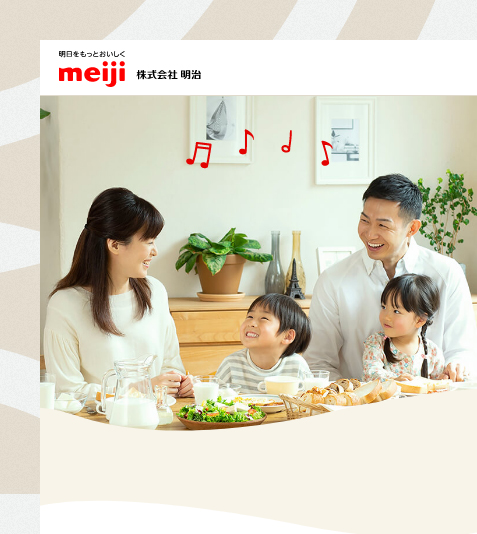

works
All Nippon Airlines
By remote working from Indonesia to Japan, I've had managed ANA Website from creating new pages as daily, monthly, even yearly projects such as handling their awarding pages.

Meiji
I have worked with some of Meiji monthly projects, which the requests is mainly to change their monthly baby related pages